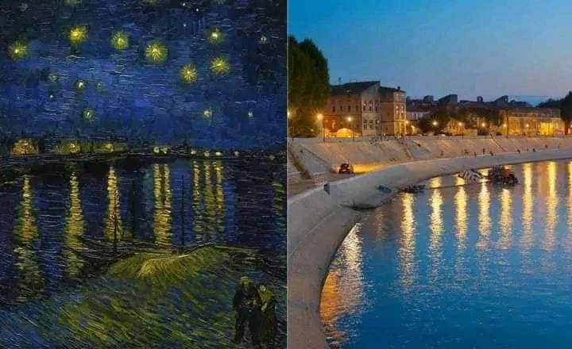
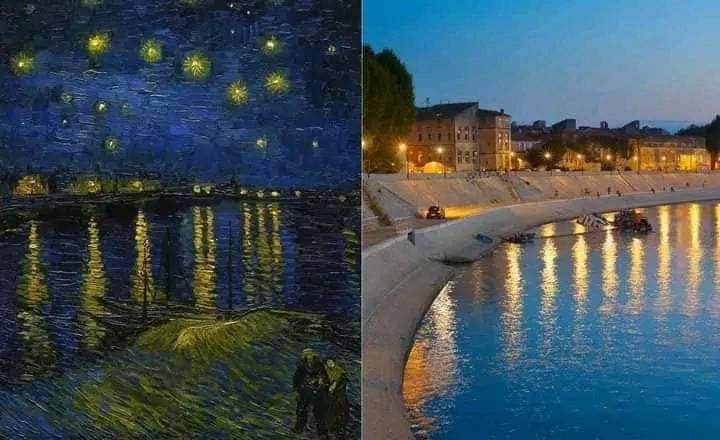
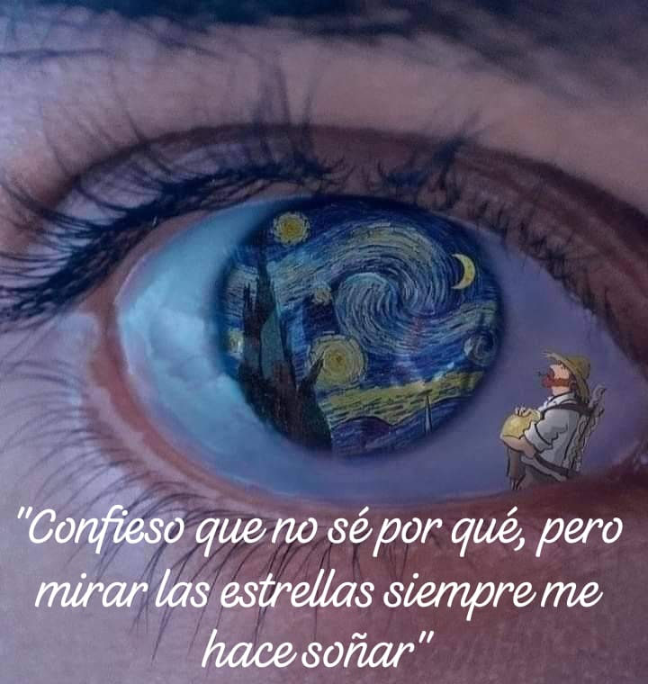
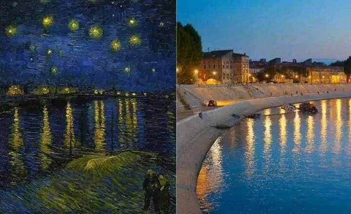
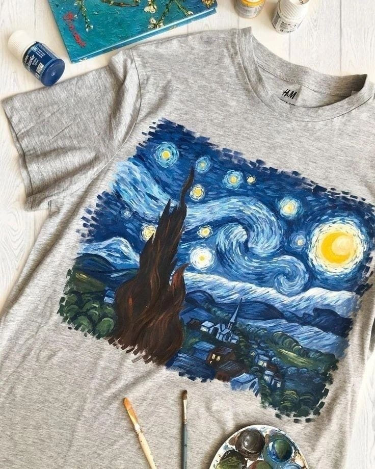
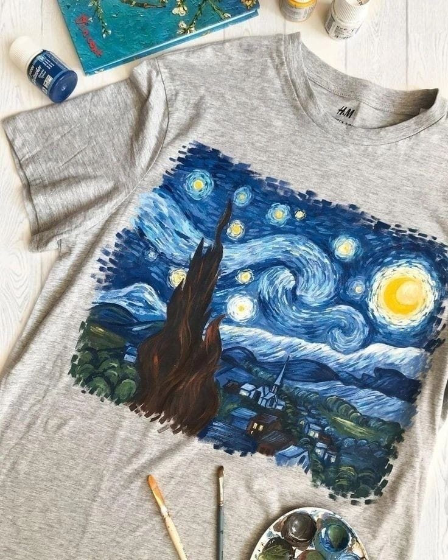

La mágia de conectar con el arte de van Gogh, radica en que aunque vivió una vida de soledad y rechazo logró captural algo universal: la belleza de lo imperfecto con sus trazos vibrantes y sus colores audaces que parecen latir con vida propia. Porque su arte es un espejo de la vida misma: imperfecto, apasionado y lleno de color. Nos hace sentir que incluso en medio del caos, hay belleza, su historia de perseverancia en medio de la adversidad nos recuerda que la grandeza muchas veces florece en los terrenos más difíciles. Es como si cada pincelada nos susurrara: "No importa lo difícil que sea la vida, siempre hay algo hermoso por descubir. Hoy van Gogh no solo es un nombre en los libros de arte; es el recordatorio de que, aunque no siempre veamos el reconociemiento en la vida, lo que creamos puede tocar almas durante siglos conectando concada alma que se detiene a admirar su manera única de ver el mundo, es un símbolo de pasión, fragilidad y la eterna busqueda de significado .




 
